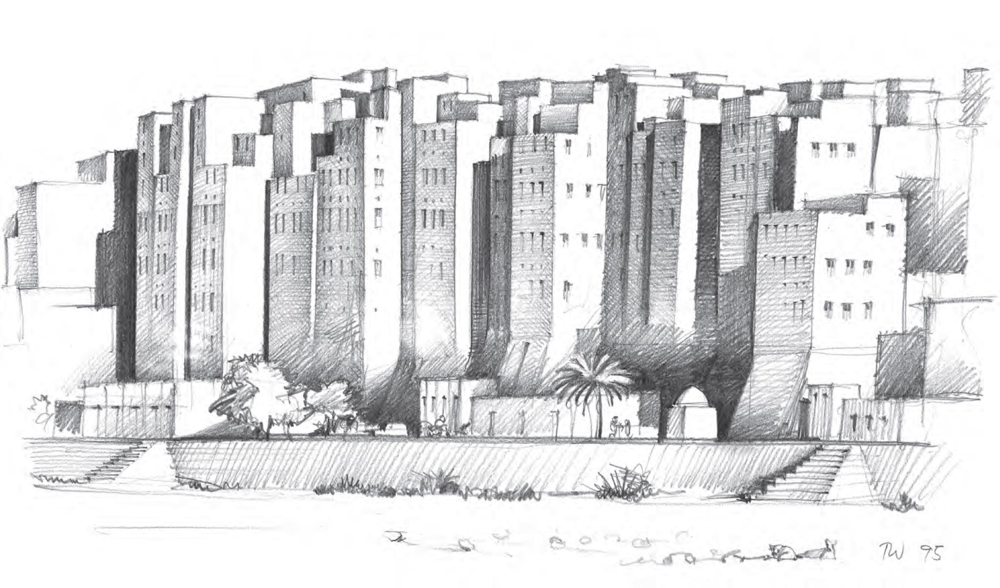

Noch vor kaum mehr als einem Jahrzehnt gehörte das Land am südlichsten Rand der arabischen Halbinsel zu den interessantesten Reisezielen für europäische Bildungstouristen. Sein Name war verbunden mit den Geschichten der sagenhaften Königin von Saba, mit Erzählungen aus der Zeit der Weihrauchkarawanen und dem einst blühenden Kaffeehandel, mit Bildern von malerisch-verwegenen Männergestalten mit Krummdolch vor dem Bauch und vollgestopfter Kat-Backe, mit Traumbildern von unglaublich dekorierten Häusern in uralten Stadtlandschaften und unvergleichlichem orientalischen Flair. Berichte von gelegentlichen Entführungen mit meist glücklichem Ausgang würzten diese Vorstellungen für manche Leute mit einer Prise Abenteueratmosphäre. Man schwärmte vom „glücklichen Arabien“, auch wenn dieses Bild längst Risse hatte.
Seit gut acht Jahren ist der Name Jemen in unvorstellbarer Geschwindigkeit zum Inbegriff von Elend, Not und Tod geworden. Die unschuldigsten und wehrlosesten Opfer dieser Tragödie sind vor allem Kinder. Ursachen für diesen dramatischen Wandel gibt es viele. Sie sind kaum zu beschreiben und haben zahllose Wurzeln.
Mit ihren ausschließlich aus Lehmziegeln, Wand an Wand gebauten 8- bis 9 geschossigen Wohntürmen gehört die Stadt Shibam im Wadi Hadramaut zu den eindrucksvollsten Architekturzeugnissen des Jemen.
Die alten Römer nannten das Land ARABIA FELIX, glückliches Arabien, und auch die einheimischen Araber selbst scheinen einmal vom Glück dieses Landes überzeugt gewesen zu sein, denn die drei Buchstaben J M N, aus denen die Wortwurzel des Namens „Jemen“ gebildet ist, stehen zusammen für die Vorstellung von „Glücklichsein“, von „Rechtschaffenheit“ und Ähnlichem.
Grund für diese Einschätzung waren wohl die geographisch bedingten saisonalen Niederschläge, die – anders als in den arabischen Wüstenregionen – ein bäuerliches und städtisches Leben ermöglichten und einen Wohlstand, der durch die günstige Lage an den uralten Karawanenrouten der Weihrauchstraße noch erheblich gesteigert werden konnte.
Wohlstand und Reichtum sind aber nicht nur Quelle von Glück, sondern auch von Neid und Machtgelüsten, sodass die Geschichte des Landes eben auch von häufigen Kriegen zwischen aufsteigenden, mächtigen und wieder zerfallenden Reichen und Dynastien ebenso geprägt war, wie von Auseinandersetzungen mit gierigen Eroberern und Fremdherrschaften. Eine inhomogene Gesellschaftsstruktur, in der ein stark ausgeprägtes Stammeswesen einer aus Religionsadel und städtischer Bürgerelite gebildeten Führungsschicht gegenüberstand, hat zudem ein übergeordnetes Nationalbewusstsein bis heute nur ansatzweise entstehen lassen, umso weniger, als sich in der Folge europäischer Kolonialpolitik Landesteile mit unterschiedlichem Entwicklungsstatus gebildet hatten.
Dass sich trotz allem in den oft burgartig-malerischen Bergdörfern und noch viel mehr in den uralten Städten weltberühmte Zeugnisse einer märchenhaften Baukultur erhalten haben, täuscht über die Tatsache hinweg, wonach die Probleme des Landes weit zurückreichen und heute in fast jeder Beziehung katastrophale Ausmaße erlangt haben. Wer den Jemen nicht nur aus der oberflächlichen Touristenperspektive kennt, die in den vergangenen drei oder vier Jahrzehnten das Land als das letzte Paradies einer unverfälschten orientalischen Traumwelt hat erscheinen lassen, sondern tiefere Einblicke in die kulturellen, wirtschaftlichen, gesellschaftlichen und insbesondere politischen Strukturen gewinnen konnte, der weiß um die kaum lösbaren Fragen der dramatischen Übervölkerung, des desaströsen Wassermangels, der Korruption und wirtschaftlichen Notlage, vor allem aber auch um den seit langem schwelenden Zerfall des innenpolitischen Zusammenhalts, der im gegenwärtigen Bürgerkrieg seinen vorläufigen Höhepunkt findet.
Der Name „Jemen“ ist also längst nicht mehr bedeutungsgleich mit „Glücklichem Arabien“, sondern sehr viel mehr mit dem genauen Gegenteil. Angesichts der gnadenlosen Belagerung und erbitterten Verteidigung ganzer Städte durch verfeindete Volksgruppen, der unbeschreiblichen Zerstörungen durch Luftangriffe – man denke dabei an Orte wie Sa’dah im Norden, an Ta’izz, an Al-Hudaydah oder Aden, ja sogar an die Bombardierungen des Weltkulturerbes Sana’a – fällt einem als Vergleich nur das Schicksal des biblischen Hiob ein. Der hatte immerhin Freunde, die ihn bemitleideten und mit weisen Ratschlägen versorgten. Den bedrängten Jemeniten unserer Gegenwart bleiben allenfalls soziale Medien um der Außenwelt Kunde von ihren Leiden zu geben und davon, dass sie längst nicht mehr verstehen, warum ihr Land in Krieg und Elend versinkt.
Traugott Wöhrlin, der Autor dieses Textes und der dazugehörigen Zeichnungen, kennt den Jemen seit über 25 Jahren. In mehreren Reisen und Aufenthalten hat er das Land nicht nur aus der Touristenperspektive erlebt, sondern ist auch mit seinen Menschen und ihrem Alltag sowie mit ihrer Kultur und Geschichte vertraut geworden. Mit seinem Buch „Hölzerne Haustüren im Jemen“ hat er eine bis dahin kaum beachtete kunstvolle Handwerkstradition dokumentiert und bewusst gemacht in der Hoffnung, sie vor dem völligen Vergessen zu retten. Im Rahmen des Möglichen hat er immer noch Kontakte zu seinen dortigen Freunden und ist Mitglied der Deutsch-jemenitischen Gesellschaft und natürlich auch unseres Vereins.